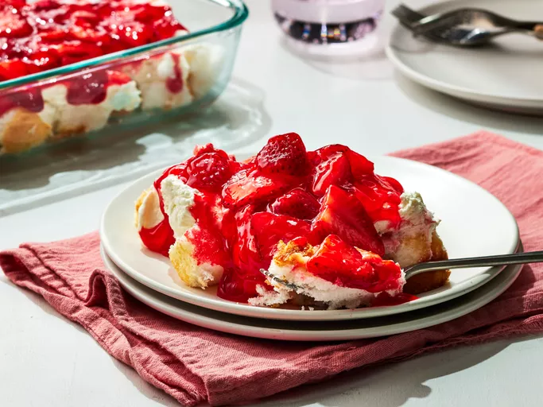

Home
Strawberry Angel Food Dessert

Description
Glazed strawberries, angel food cake, and a sweet creamy topping are layered in this colorful, chilled dessert.
Ingredients
- 1 (10 inch) angel food cake
- 2 (8 ounce) packages cream cheese, softened
- 1 cup white sugar
- 1 (8 ounce) container frozen whipped topping, thawed
- 1 quart fresh strawberries, sliced
- 1 (18 ounce) jar strawberry glaze
Steps
- Gather all ingredients.
- Crumble or cut cake into bite-sized pieces. Arrange in a 9x13-inch dish.
- Beat cream cheese and sugar in a medium bowl until light and fluffy. Fold in whipped topping.
- Press cake down to form a layer. Spread cream cheese mixture over cake layer.
- Combine strawberries and glaze in a bowl until strawberries are evenly coated.
- Spread over cream cheese layer.
- Chill until serving.